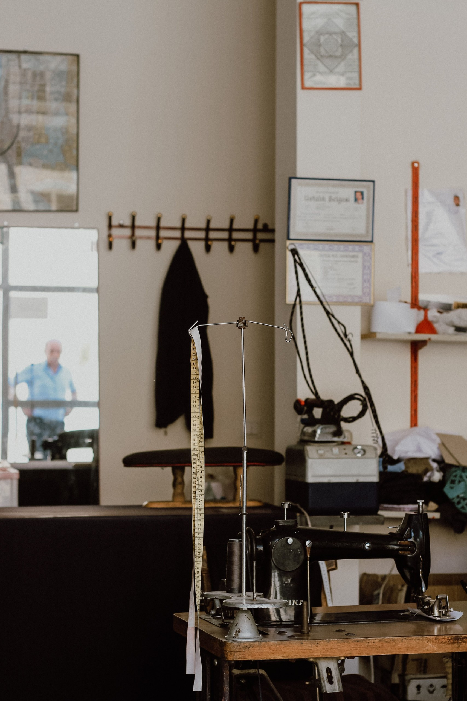
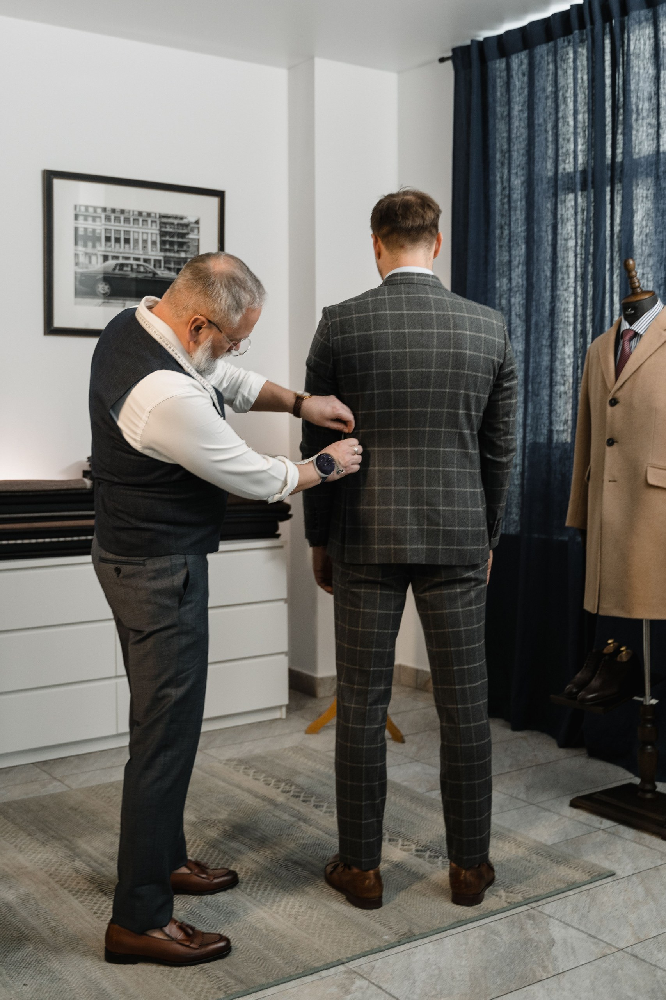
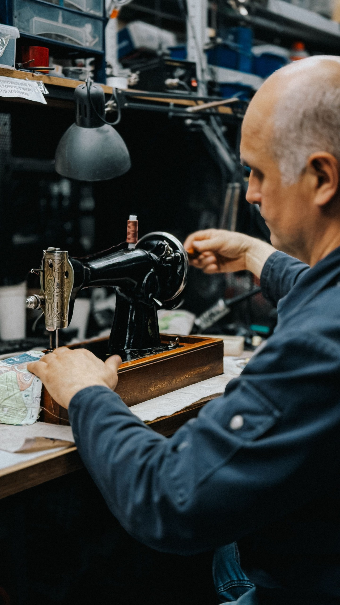
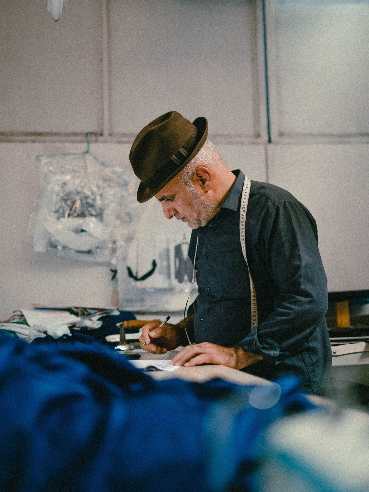
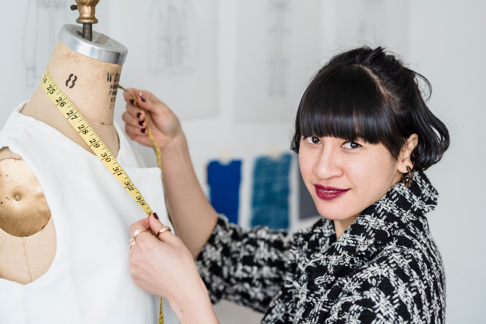

Our mission
Make personal garment care easier to plan and request.
WHY STITCHDOOR
Our approach brings garment care and personal tailoring into an easier doorstep journey.

A favourite garment should not be abandoned because of a small fit problem or broken fastening. StitchDoor is built around making those changes easier to request and understand.
Our mission is to help people care for their wardrobes with thoughtful workmanship and clear service expectations.
Make personal garment care easier to plan and request.
A wardrobe where repair and alteration are natural choices.
Understand the garment, agree the requirements and review the finish.
Each request starts with requirements and garment condition. Workmanship, measurement review and careful finishing guide the service.
THE PEOPLE BEHIND THE SEAMS
Tailoring roles include measurement review, stitching and quality inspection. Individual team profiles can be added when confirmed.

Translate your preferences into clear garment requirements.

Review fabric and construction before carrying out the work.

Check altered areas and finishing before return arrangements.
CUSTOMER STORIES
“My favourite trousers finally fit the way I wanted. The length feels right, the finish looks neat, and I reach for them more often now.”
Alterations
“A broken fastening had kept my jacket in the wardrobe. Having it repaired gave a favourite piece another chance, with a clean and careful finish.”
Garment repairs
“The measurements and fit details made the process feel personal. My finished garment feels comfortable, with the shape and finish I had in mind.”

Custom tailoring
YOUR QUESTIONS
Share any garment-specific questions with your request.
Estimates depend on fabric, garment construction, materials and the changes required. The final quote needs review by the service team.
Add each garment separately to your pickup request, with its own requirements and quantity.
A saved online request is not a confirmed pickup. Service coverage and scheduling must be confirmed separately.
Provide relevant measurements, use a saved measurement profile or request guidance. A reference garment can help explain your preferred fit.
THOUGHTFUL WORK. FAMILIAR CLOTHES.
Bring the pieces you care about into a conversation about fit, repair and careful finishing.